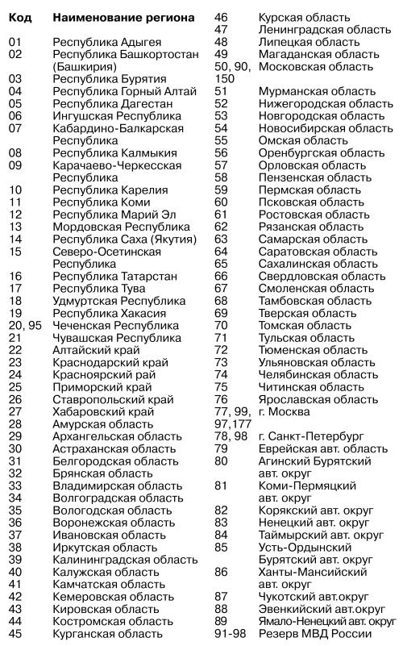

Станции заправки автомобилей газовым топливом на основных трассах России и СНГ.
M1 (Москва – Минск): г. Одинцово, дер. Акулово, г. Голицыно, дер. Алабино, г. Кубинка, г. Вязьма, пос. Сафонове, г. Ярцево, г. Смоленск (две АГСН: ул. Лавочкина, 1a; Красинское ш.), г. Рославль, г. Орша, г. Бобруйск, г. Могилев (Чаусское ш.; пл. Гагарина), г. Минск (три АГСН: Могилевское шоссе – около 3 км от кольцевой автодороги в сторону Могилева; Староборисовский тракт – в районе Академгородка; ул. Матусевича – в районе пересечения с ул. Лещинского).
М2 (Москва – Симферополь): г. Подольск (четыре АГСН), г. Чехов, г. Серпухов, г. Алексин, г. Тула (три АГСН: объездная дорога; конец скоростной трассы по правой стороне при движении из Москвы; Рязанское шоссе), 189-й км (перекресток Белов-Тула), г. Щекино (две АГСН), г. Мценск, г. Орел, г. Курск (две АГСН), г. Белгород (восемь АГСН), г. Харьков (две АГСН), г. Мерефа, пос. Высокий (не доезжая Мерефы), г. Днепропетровск (три АГСН), г. Днепродзержинск, г. Запорожье (семь АГСН), г. Васильевка, г. Мелитополь (две АГСН), Крым (г. Раздольное, г. Саки, г. Евпатория – две АГСН, г. Джанкой, г. Симферополь – две АГСН, г. Феодосия, г. Алушта, г. Ялта).
М3 (Москва – Киев): г. Апрелевка, пос. Селятино (две АГСН), г. Наро-Фоминск, г. Балабаново, г. Обнинск (две АГСН), д. Белоусово, г. Калуга (две АГСН), г. Брянск (две АГСН), поворот на Клинцы, г. Чернигов, г. Киев (четыре АГСН).
М4, М27 (Москва – Ростов-на-Дону – Сочи): г. Видное (две АГСН), пос. Авиагородок (две АГСН), г. Узловая, г. Становое, г. Елец, г. Воронеж (три АГСН), г. Богучар, г. Миллерово, пос. Тарасовский, г. Каменец-Шахтинский (две АГСН), после развилки с М21 (22, 109, 120, 165-й км), после развилки на г. Шахты (10 км пос. Рассвет, через 8 км после пос. Рассвет), 1003-й км, 1050-й км (АЗС «Русь», г. Ростов (четыре АГСН), станица Кущевская, г. Ейск, г. Усть-Лабинск (М29), г. Кропоткин (М29), г. Армавир (М29), г. Невинномыск (М29), г. Краснодар (четыре АГСН), пос. Энем, пос. Ахтырский (83 км от Краснодара), пос. Горячий Ключ, г. Анапа (М25), г. Новороссийск, г. Туапсе, пос. Лазаревское (две АГСН), г. Сочи (семь АГСН).
М5 (Москва – Челябинск): г. Люберцы, пос. Красково, г. Лыткарино, г. Воскресенск (две АГСН), г. Коломна, г. Луховицы (100-й км), г. Рязань (две АГСН), г. Шилово, г. Пенза (пять АГСН), г. Саратов (A396 – четыре АГСН), г. Энгельс (А409), пос. Городище, г. Кузнецк, пос. Новоспасское, г. Жигулевск (две АГСН), г. Тольятти (две АГСН), пос. Прибрежный, г. Самара (четыре АГСН), г. Кинель, пос. Суходол, г. Октябрьский, г. Уфа (две АГСН), г. Челябинск (восемь АГСН), г. Екатеринбург (М36 – три АГСН), г. Омск, г. Красноярск (восемь АГСН).
М6 (Москва – Астрахань): г. Михайлов (261-й км), г. Чаплыгин, пос. Изосимово, г. Мичуринск, г. Тамбов (три АГСН), г. Рассказово (А404), г. Кирсанов, 477-й км, г. Новоанненский (933-й км), пос. Разгуляевка, г. Волгоград (три АГСН), г. Камышин, г. Ахтубинск, пос. Харабали, г. Волжский, г. Астрахань (две АГСН).
М7 (Москва – Казань): г. Балашиха, г. Железнодорожный, г. Ногинск, г. Петушки, г. Юрьевец (две АГСН), г. Владимир (две АГСН), г. Вязники (две АГСН), дер. Золино, г. Нижний Новгород (шесть АГСН), г. Чебоксары (три АГСН), г. Йошкар-Ола (восемь АГСН), г. Зеленодольск, г. Казань (десять АГСН), г. Ижевск.
М8 (Москва – Архангельск): пос. Тарасовка, г. Пушкино, пос. Софрино, г. Хотьково, г. Александров, г. Переславль-Залесский, г. Ярославль (три АГСН), г. Вологда (две АГСН), г. Шексна (А114), г. Череповец (А114), г. Вельск, г. Архангельск (четыре АГСН).
М9 (Москва – Рига): 1 км от МКАД, г. Дедовск, г. Истра, г. Волоколамск, пос. Шаховская, г. Ржев, г. Нелидово, г. Великие Луки, г. Опочка (М20), г. Остров (М20).
M10 (Москва – Санкт-Петербург): 10 км от МКАД, г. Зеленоград (две АГСН), г. Солнечногорск, г. Клин (две АГСН), г. Тверь (две АГСН), г. Осташков (368-й км), пос. Едрово (390-й, 394-й км), г. Боровичи, г. Валдай (три АГСН), пос. Крестцы, г. Новгород (две АГСН), г. Ушаки, г. Тосно (две АГСН), г. Санкт-Петербург (семь АГСН), г. Сестрорецк, г. Выборг (две АГСН), г. Тихвин (А114).
